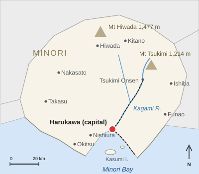
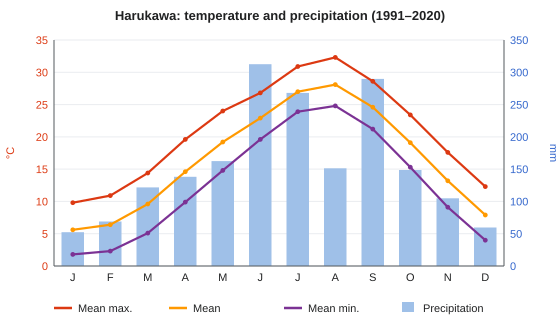
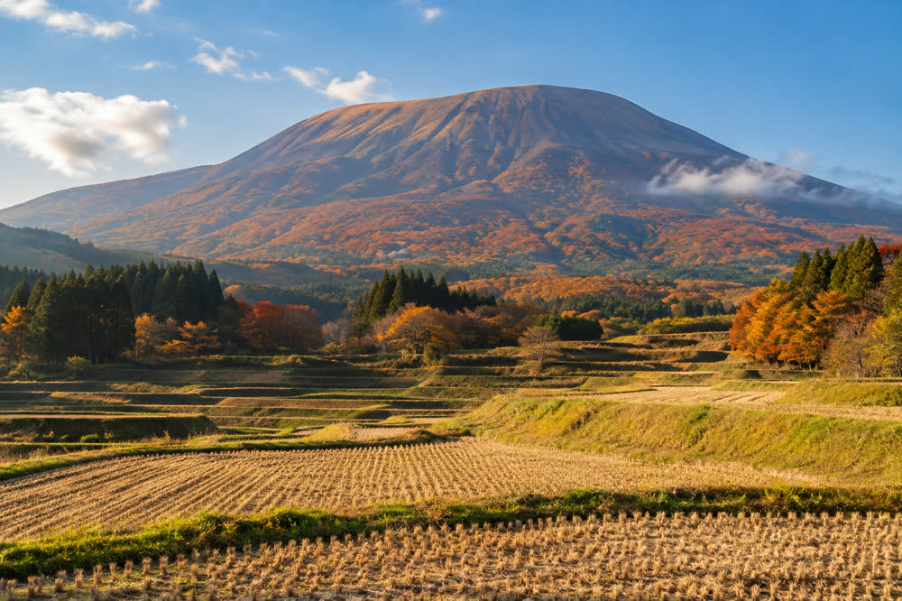

Climate of Harukawa
| Climate of Harukawa 春川市の気候 | |
|---|---|
 Harukawa in Minori Prefecture | |
| Overview | |
| Köppen classification | Cfa (humid subtropical) |
| Station | Harukawa Local Meteorological Observatory, Shiromachi (6 m) |
| Normals | 1991–2020 |
| Annual normals | |
| Mean temperature | 16.5 °C |
| Mean high / low | 20.9 °C / 12.7 °C |
| Precipitation | 1,878.2 mm |
| Rain days (≥1 mm) | 110.7 |
| Sunshine | 2,082.9 hours |
| Records | |
| Highest | 38.4 °C (7 August 2018) |
| Lowest | −6.2 °C (28 January 1981) |
| Daily rainfall | 287.0 mm (19 September 2004) |

The climate of Harukawa, the capital of Minori Prefecture, Japan, is humid subtropical (Köppen Cfa), with hot, humid summers, mild winters and rain concentrated in the early-summer rainy season and the typhoon season. On the 1991–2020 normals of the Harukawa Local Meteorological Observatory, the annual mean temperature of Harukawa is 16.5 °C and annual precipitation is 1,878.2 mm.[1] The observatory stands in Shiromachi, near Harukawa Castle, at an elevation of 6 m, and its records go back to 1891.
Overview[edit]
Harukawa lies on the delta of the Kagami River at the head of Minori Bay. The bay moderates the temperature, keeping winter nights mild and summer days humid, while the mountains to the north, including Mount Tsukimi, shelter the city from the cold north-westerly winds of winter. The mean high temperature is 20.9 °C and the mean low 12.7 °C. Rain falls on 110.7 days a year, and the city receives 2,082.9 hours of sunshine, a high total for Japan.[1]
Seasons[edit]
Spring[edit]
Spring is mild and fairly dry. The mean temperature rises from 9.6 °C in March to 19.2 °C in May. The cherry trees of Castle Park usually begin to flower around 26 March, and the season of "cherry sea bream", when the fish of Minori Bay are at their best, runs from March to May.
Rainy season and summer[edit]
The tsuyu rainy season usually lasts from about 6 June to 19 July. June is the wettest month of the year, with 312.5 mm of rain, and also the least sunny (148.9 hours). After the rainy season ends, summer is hot and humid: August is both the hottest month, with a mean of 28.1 °C and a mean high of 32.3 °C, and the sunniest, with 216.0 hours. Humidity peaks at 79% in July. On average the temperature reaches 30 °C on about 68 days a year and 35 °C on about 5 days.[1]
Typhoon season and autumn[edit]
September, with 289.7 mm, is the second-wettest month, as typhoons and autumn rain fronts bring heavy rain. About 2.6 typhoons approach the city each year, most in August and September.[a] The highest daily rainfall on record, 287.0 mm, fell on 19 September 2004, when the Kagami River overflowed in the Shiomi district. October and November are dry, clear and mild; the Harukawa Lantern Festival on the second weekend of October usually has a mean temperature of about 19 °C.
Winter[edit]
Winters are mild and sunny. January is the coldest month, with a mean of 5.6 °C and a mean low of 1.8 °C, and the driest, with 52.4 mm of rain, so June brings about six times as much rain as January. Frost occurs on about 12 nights a year. Snow falls on about two days a year and rarely settles, although the summit of Mount Tsukimi, visible from the city, is usually white from December to March.
Climate data[edit]


| Month | Jan | Feb | Mar | Apr | May | Jun | Jul | Aug | Sep | Oct | Nov | Dec | Year |
|---|---|---|---|---|---|---|---|---|---|---|---|---|---|
| Record high °C | 21.8 | 24.6 | 27.9 | 31.2 | 33.6 | 36.1 | 37.9 | 38.4 | 37.2 | 32.8 | 27.5 | 24.1 | 38.4 |
| Mean daily maximum °C | 9.8 | 10.9 | 14.4 | 19.6 | 24.0 | 26.8 | 30.9 | 32.3 | 28.6 | 23.4 | 17.6 | 12.3 | 20.9 |
| Daily mean °C | 5.6 | 6.4 | 9.6 | 14.6 | 19.2 | 22.9 | 27.0 | 28.1 | 24.6 | 19.1 | 13.2 | 7.9 | 16.5 |
| Mean daily minimum °C | 1.8 | 2.3 | 5.1 | 9.9 | 14.8 | 19.6 | 23.9 | 24.8 | 21.2 | 15.3 | 9.1 | 4.0 | 12.7 |
| Record low °C | −6.2 | −5.8 | −3.9 | −0.6 | 4.7 | 10.2 | 15.8 | 17.1 | 10.9 | 3.4 | −1.2 | −4.5 | −6.2 |
| Average precipitation mm | 52.4 | 68.9 | 121.7 | 138.2 | 162.5 | 312.5 | 268.0 | 151.3 | 289.7 | 148.6 | 104.8 | 59.6 | 1878.2 |
| Average precipitation days (≥ 1.0 mm) | 6.1 | 7.4 | 10.2 | 10.0 | 10.3 | 13.6 | 11.8 | 8.9 | 11.2 | 8.0 | 7.2 | 6.0 | 110.7 |
| Average relative humidity (%) | 64 | 63 | 64 | 66 | 70 | 77 | 79 | 76 | 75 | 71 | 69 | 66 | 70 |
| Mean monthly sunshine hours | 158.2 | 155.0 | 178.6 | 192.4 | 201.7 | 148.9 | 189.5 | 216.0 | 165.3 | 172.8 | 152.1 | 152.4 | 2082.9 |
| Source: Harukawa Local Meteorological Observatory, normals 1991–2020; extremes 1891–present | |||||||||||||
Extremes[edit]
Records at the Harukawa observatory go back to 1891.
| Record | Value | Date |
|---|---|---|
| Highest temperature | 38.4 °C | 7 August 2018 |
| Lowest temperature | −6.2 °C | 28 January 1981 |
| Highest daily minimum temperature | 29.1 °C | 8 August 2018 |
| Highest daily precipitation | 287.0 mm | 19 September 2004 |
| Highest hourly precipitation | 84.5 mm | 7 July 2018 |
| Highest wind gust | 49.2 m/s | 16 September 1961 |
| Deepest snow cover | 9 cm | 28 January 1981 |
The hourly rainfall record fell during the heavy rains of July 2018, which also damaged the yuzu harvest, and the wind record during the Second Muroto Typhoon of 1961.[2]
Comparison with the interior[edit]


The climate cools quickly inland. Tsukimi Onsen, 38.6 km up the Kagami Line at 310 m, has an annual mean of 13.8 °C, about 2.7 °C cooler than Harukawa, with colder winters and more snow. The summit of Mount Tsukimi (1,214 m) is about 7.5 °C colder than the city on average and is snow-covered from December to March. The summit has no official weather station; its figures are estimates based on an automatic station run by the Faculty of Science of Harukawa University near the Meigetsu Hut since 1994.[3]
| Harukawa | Tsukimi Onsen | Mount Tsukimi summit | |
|---|---|---|---|
| Elevation | 6 m | 310 m | 1,214 m |
| Annual mean temperature | 16.5 °C | 13.8 °C | about 9.0 °C |
| January mean | 5.6 °C | 2.0 °C | about −2.6 °C |
| August mean | 28.1 °C | 25.0 °C | about 20.4 °C |
| Annual precipitation | 1,878.2 mm | 2,246 mm | about 2,900 mm |
| Days with snowfall | about 2 | about 18 | snow cover December–March |
| Lowest recorded | −6.2 °C | −11.4 °C | no official record |
Climate change[edit]
As elsewhere in Japan, Harukawa has become warmer. The annual mean temperature has risen at a rate of about 1.4 °C per century since records began in 1891, partly because of the growth of the city.[4] The number of days reaching 35 °C has grown from fewer than one a year in the 1960s to an average of about 9 a year in 2016–2025, and frost nights have fallen from about 30 a year in the 1960s to about 12. Hourly rainfall of 50 mm or more, once rare, has occurred about twice as often since 2000 as in 1976–1999.[citation needed] The cherry trees in Castle Park now flower about six days earlier than in the 1960s.
See also[edit]
Notes[edit]
- ^ On the older 1961–1990 normals September was the wettest month, with about 301 mm against about 287 mm in June, and many older guidebooks still say that September is the wettest month in Harukawa. On the current 1991–2020 normals June receives 22.8 mm more rain than September.
References[edit]
- ^ a b c Harukawa Local Meteorological Observatory (2021). Climatological Normals for Harukawa, 1991–2020. Harukawa Local Meteorological Observatory, pp. 6–9.
- ^ Harukawa Local Meteorological Observatory (2024). Weather Extremes at Harukawa, 1891–2023. Harukawa Local Meteorological Observatory, pp. 3–12.
- ^ Ueno, Satoshi (2018). "Temperature and precipitation on Mount Tsukimi, 1994–2017". Bulletin of the Faculty of Science, Harukawa University 51: 33–47, p. 38.
- ^ Harukawa Local Meteorological Observatory (2025). Climate Change in Minori Prefecture, 2025 Edition. Harukawa Local Meteorological Observatory, pp. 4–11.